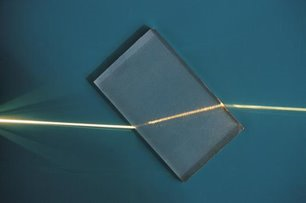
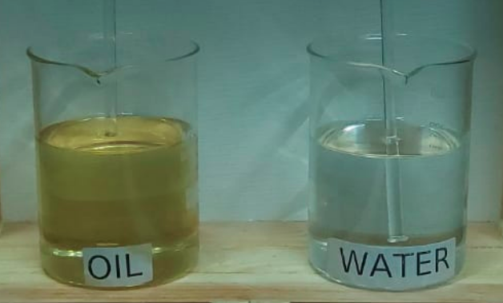

Aim
The aim of this experiment is to observe the change in visibility of a glass rod when
immersed in oil and in water
Apparatus
The apparatus used in the experiment is Glass rods (Refractive index ≈ 1.5), sunflower oil
(Refractive index ≈ 1.47), water (Refractive index ≈ 1.33), glass beakers. (Make sure that
the refractive index of the glass being used is similar to the refractive index of the oil.)
Procedure:
The apparatus used in the experiment is Glass rods (Refractive index ≈ 1.5), sunflower oil
(Refractive index ≈ 1.47), water (Refractive index ≈ 1.33), glass beakers. (Make sure that
the refractive index of the glass being used is similar to the refractive index of the oil.)
Physics of the Experiment
The main physics behind the experiment can be summarized as:
- Whatever we see around us is due to the light which gets reflected from the object
and reaches our eyes.
- If this reflection is somehow removed, then no light will reach the observer and hence
he/she will not be able to see the object, effectively making it invisible.
- When the rod is immersed in water, due to different refractive indices of the water
and the glass, light bends to different degrees in both the mediums and hence we are
able to discern between the separate mediums.
- On the other hand, when the glass rod is immersed in oil, since the refractive indices
are similar, light behaves as if it is passing through a homogenous medium. As a result,
our eyes are not able to differentiate between the glass rod and the oil and hence the
rod appears to have disappeared.

refraction through Glass slab

Glass rod getting invisible in Oil